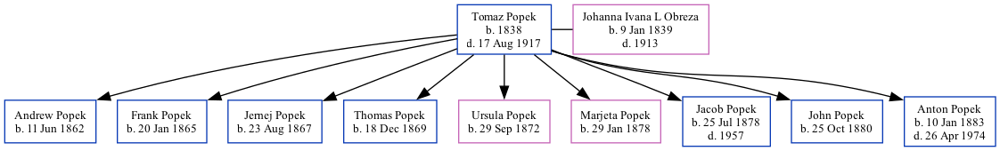

Tomaz Popek 1838 - 1917
[ Home ] | [ Calendar ] | [ Surnames Index ] | [ Family History ]Tomaz Popek, the husband of Johanna Ivana L Obreza (the five times great-aunt of Michele Copp (née Phillips)), was born in Begunje, Cerknica, Slovenia in 1838 andhad 9 children, Andrew, Frank, Jernej, Thomas, Ursula, Marjeta, Jacob, John and Anton.
He died on Aug 17, 1917.
Children
- Andrew was born on Jun 11, 1862
- Frank was born on Jan 20, 1865
- Jernej was born on Aug 23, 1867
- Thomas was born on Dec 18, 1869
- Ursula was born on Sep 29, 1872
- Marjeta was born on Jan 29, 1878
- Jacob was born on Jul 25, 1878
- John was born on Oct 25, 1880
- Anton was born on Jan 10, 1883
Family Tree
Generated by ged2site. Last updated on Sep 9, 2024